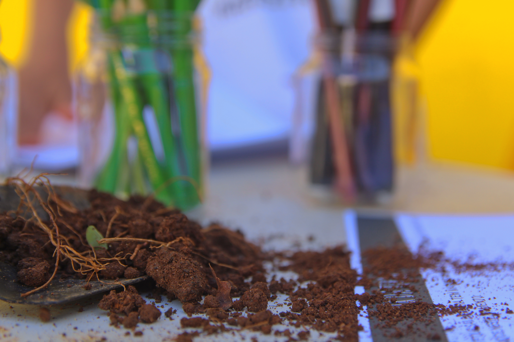
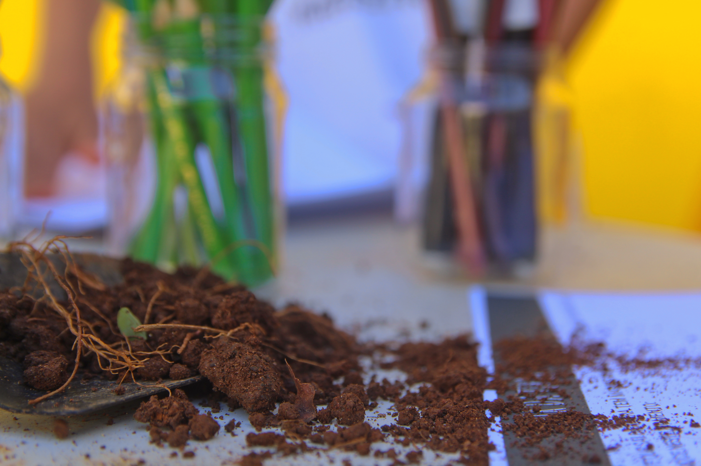

Ana Paula, uma fotógrafa e designer apaixonada por registrar momentos incríveis com crianças e criar identidades visuais marcantes. Com minha abordagem profissional e criativa, capturo imagens autênticas que representam as experiências únicas das crianças.
Na fotografia infantil, não me limito a poses comuns. Meu objetivo é capturar a verdadeira essência das crianças e os momentos especiais que vivem. Cada imagem que crio transmite a beleza da infância e cria memórias preciosas para toda a vida.
Além disso, tenho uma paixão por criar logos e marcas que causam impacto. Utilizando minha experiência em design, desenvolvo identidades visuais únicas e memoráveis, que refletem a personalidade e os valores de cada projeto.
Ao combinar minha paixão pela fotografia infantil e design, ofereço uma abordagem completa para suas necessidades visuais. Com dedicação, sensibilidade e atenção aos detalhes, garanto resultados excepcionais que superam as expectativas.


 
